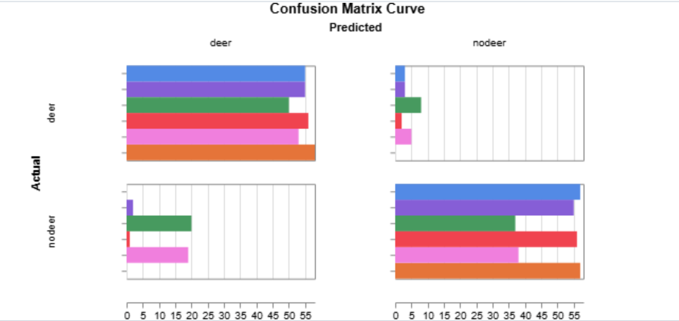

Technical Overview

Safesight is an image classification project that uses AlexNet to determine whether wildlife (specifically deer) is present on a driver’s route. The goal is to explore how deep learning can help reduce wildlife–vehicle collisions by warning drivers before a potential impact.
To understand the impact of transfer learning, I compared three types of experiments: (1) baseline AlexNet, (2) untrained AlexNet with random initialization, and (3) pretrained AlexNet fine-tuned on my deer vs nodeer dataset.
Dataset
Data Collection
- Total images collected: ~320 Google Images results.
- Final images used after loading: 307 (192 train, 115 validation).
- Classes: deer, nodeer.
- Goal: simulate dashcam-style views where a driver might encounter wildlife on or near the road.
Split Strategy & Organization
- Training set: 192 images (≈ 62%).
- Validation set: 115 images (≈ 38%).
- Folder structure:
train/deerandtrain/nodeervalid/deerandvalid/nodeer- Simple data augmentations such as random flips and crops help imitate small viewpoint changes a driver might experience.
Model: AlexNet for Binary Wildlife Detection
Pretrained Backbone
Safesight uses the classic AlexNet architecture from PyTorch’s model zoo. The version pretrained on ImageNet is used as a general feature extractor that is already good at detecting edges, textures, and object parts.
- The early convolutional layers are reused to capture low-level and mid-level visual features relevant for many object categories, including deer.
- This lets the model start from a strong visual prior instead of learning everything from scratch on a small dataset.
Classifier Modification
The original AlexNet classifier outputs 1000 ImageNet classes. For Safesight, I replaced the final classifier head to adapt the model to the two-class deer vs nodeer problem:
- A final fully connected layer with 2 output units (deer, nodeer).
- Training with a standard cross-entropy loss for binary classification.
- This simple change allows the model to leverage learned ImageNet features while focusing on the wildlife detection task.
Training Setup
Hyperparameters
- Epochs: 30 for all runs.
- Batch size: small-batch training suitable for 192 training images.
- Optimizer: standard gradient-based optimizer (e.g., SGD or Adam).
- Learning rate: small enough for stable fine-tuning of the pretrained backbone.
- Loss: Cross-entropy for binary classification.
Experiment Tracking (Weights & Biases)
All experiments were tracked with Weights & Biases (W&B). For each run, I logged:
- Training and validation loss.
- Training and validation accuracy.
- Summary statistics such as
best_validation_accuracy.
This made it easy to compare baseline, untrained, and pretrained AlexNet runs and clearly see the benefit of transfer learning.
Results & Experiments
Overall Performance
I ran six main experiments on the Safesight deer vs nodeer dataset using AlexNet and ResNet18. Each experiment logged training and validation loss and accuracy to Weights & Biases (W&B), making it easy to compare hyperparameters and architectures.
- Best AlexNet (pretrained): validation accuracy up to 0.9826 (≈ 98.3%) with batch size 16, learning rate 0.0001, and data augmentation.
- Typical strong AlexNet runs: validation accuracy in the 0.96–0.98 range for batch sizes 32 and 64 with learning rate 0.0001.
- AlexNet (untrained): training from scratch with random initialization reached only about 0.80 (80%) best validation accuracy on the same data.
- Best ResNet18 (pretrained): a ResNet18 model with learning rate 0.0001 and augmentation achieved 1.00 (100%) validation accuracy and very low validation loss.
These results show that transfer learning and a stronger architecture like ResNet18 can make a big difference on a small, real-world style dataset.
Batch Size & Learning Rate Experiments
To understand how training hyperparameters affect performance, I varied both batch size and learning rate:
- Batch size: I trained AlexNet with batch sizes 16, 32, and 64. Smaller batches (bs = 16) gave slightly higher best validation accuracy (≈ 98.3%) on this dataset, while larger batches (bs = 64) still performed very well (≈ 97–96%).
-
Learning rate: With a conservative learning rate of
0.0001, AlexNet converged smoothly and reached high validation accuracy. When I increased the learning rate to0.001, the model became unstable and validation accuracy stayed near 60%, illustrating how an overly large learning rate can hurt training.
W&B plots of training vs. validation accuracy and loss clearly show the difference between the stable 0.0001 runs and the noisy 0.001 run.
Data Augmentation vs. No Augmentation
I also compared runs with and without data augmentation. Augmented runs used random horizontal flips and standard ImageNet normalization; non-augmented runs only resized and normalized the images.
- With augmentation: multiple AlexNet runs with augmentation achieved high validation accuracy (up to ≈ 98.3%), and the learning curves showed smoother generalization to the validation set.
- Without augmentation: a comparable AlexNet run without augmentation still reached strong validation accuracy (≈ 96–97%), but augmentation is expected to help robustness, especially as the dataset grows or includes more varied conditions.
For a safety-critical application like wildlife detection while driving, augmentation helps the model handle small viewpoint and lighting changes that drivers experience in the real world.
AlexNet vs. ResNet18
Finally, I compared AlexNet to a deeper architecture, ResNet18, using the same dataset and a similar training setup (batch size 32, learning rate 0.0001, augmentation on).
- AlexNet (pretrained): best validation accuracy around 98%.
- ResNet18 (pretrained): reached 100% validation accuracy with very low validation loss (≈ 0.003), and both training and validation accuracy quickly climbed to 1.0.
This comparison suggests that modern residual networks like ResNet18 can learn even more effective features for Safesight’s deer vs nodeer classification task, especially when combined with transfer learning from ImageNet.
Experiment Results & Visualizations
AlexNet vs ResNet18 – Accuracy

Training and validation accuracy for pretrained ResNet18 compared to AlexNet. ResNet18 reaches 100% validation accuracy and stays there with very low variance, while AlexNet typically peaks in the 97–98% range. This suggests that the deeper residual architecture can extract slightly stronger features for this wildlife detection task.
AlexNet vs ResNet18 – Loss

Validation loss for ResNet18 drops extremely low (close to zero) and stays stable across epochs, indicating very confident and consistent predictions on the validation set. AlexNet also achieves low loss, but ResNet18 converges faster and to a smaller final loss, aligning with its perfect validation accuracy.
AlexNet Confusion Matrix

Confusion matrix for the best pretrained AlexNet run. Most examples are correctly classified as deer or nodeer, with only a small number of misclassifications. This shows that AlexNet learns a strong decision boundary, but still makes occasional mistakes on challenging edge cases.
ResNet18 Confusion Matrix
Confusion matrix for pretrained ResNet18. All validation images fall on the diagonal, meaning every deer and nodeer image was classified correctly (100% validation accuracy). On this dataset, ResNet18 fully separates the two classes.
Takeaways & Future Work
Key Takeaways
- Transfer learning with AlexNet provides a strong performance boost on a small, custom deer vs nodeer dataset.
- Even with limited data, careful organization, basic augmentation, and good experiment tracking can produce a reliable model.
- Tools like W&B make it easy to compare many runs and avoid guessing which model is “best”.
Future Work
- Collect more real dashcam footage in diverse weather and lighting conditions.
- Extend the label space from binary deer/nodeer to multiple animal categories and “no animal”.
- Explore smaller, faster architectures for real-time deployment in vehicles or mobile devices.